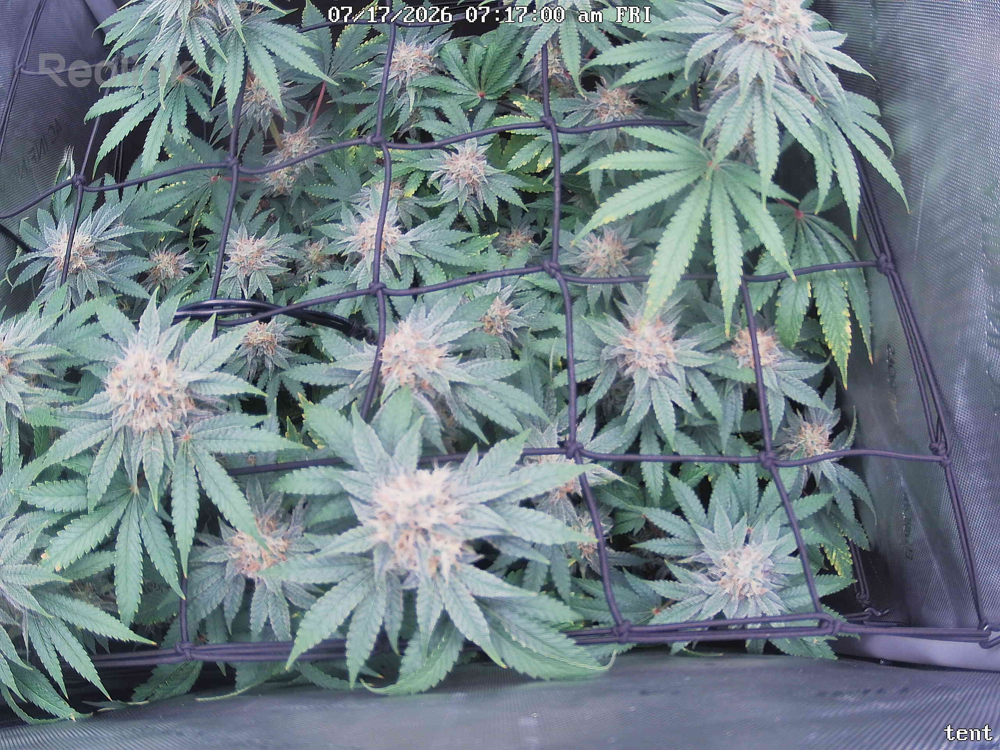
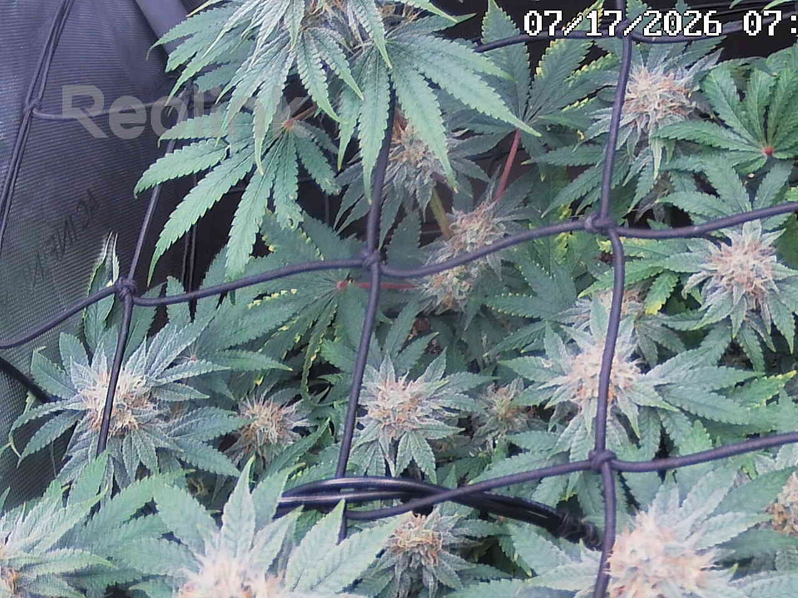
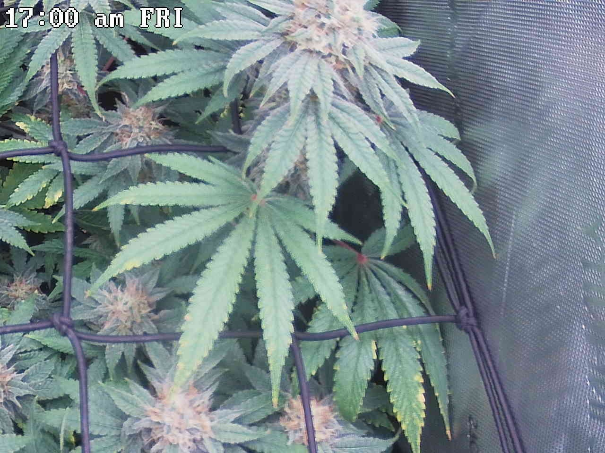
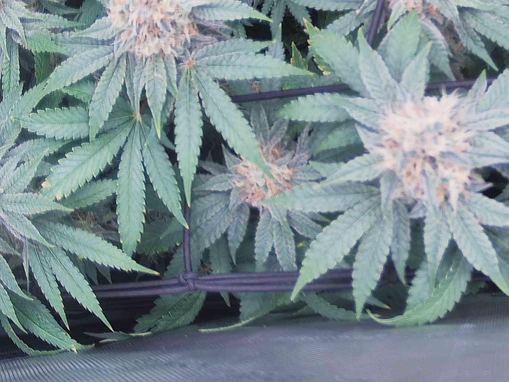
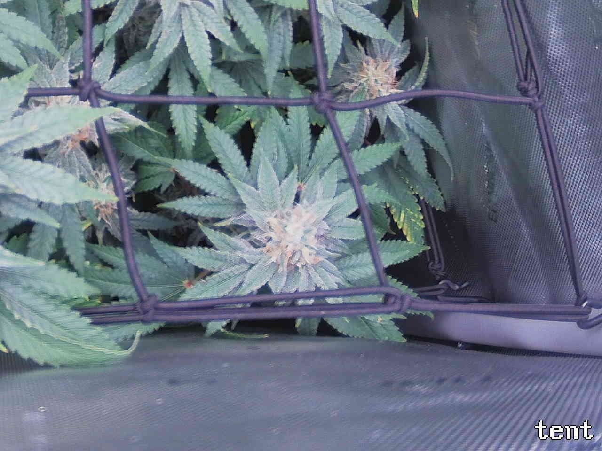
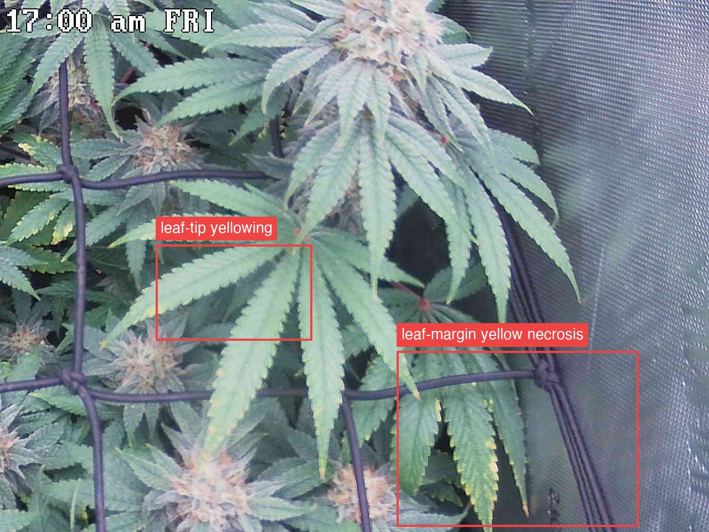

Per-quadrant analysis — the canopy shot was split into a 2x2 grid and each region compared against the previous day.
The plant is healthy and on-track for late flower (~day 44): canopy remains fully closed with no structural stall, buds are marginally fatter, and pistils are progressing white→cream/amber across all four quadrants, consistent with normal bulking and ripening. No pests, mold, or bud rot are visible in any tile — though top-down framing cannot rule out early interior rot in the densest colas — and the tops/sugar leaves stay deep green with frost. The one persistent concern is the documented lower/interior fan-leaf margin-and-tip yellowing (serration-traced), noted in all four quadrants as stable except in Top-right (ATTENTION), where the lower-right leaf margin necrosis and center-left tip chlorosis read marginally more extended/browner day-over-day; the leading read is normal senescence, but the serration-margin pattern keeps a concurrent potassium draw on the table and it is confined to old/shaded leaves, not climbing into the tops. Single most important action: verify the yellowing's trajectory and cause with a side-profile/soil check and a re-read of the K deficiency vs. late-flower fade criteria (02-deficiencies02 · Nutrient Deficiencies & ToxicitiesAlways run the framework first (pH/watering, then location). Fixes below assume a synthetic/bottled-nutrient grow; for living soil, see 07 (the remedy is amendments/teas, not a bottle).Covers: Mobility cheat sheet · Mobile nutrients · Immobile nutrients · Toxicities & overfeeding · Hard ruleGrowBuddy knowledge base · 02-deficiencies.md, 06-grow-cycle06 · Grow Cycle — What's Normal WhenKnowing the stage prevents false alarms (e.g., late-flower leaf fade is normal, not a deficiency) and sets expectations. Timelines are typical photoperiod ranges; genetics vary.Covers: Stages · Photoperiod vs Autoflower (critical distinction) · Whole-plant & structural issues (not a leaf symptom) · Harvest timing (trichomes)GrowBuddy knowledge base · 06-grow-cycle.md) rather than escalating on one top-down frame.
Bud sites (whole plant, estimate): 14-23
Bud sites: 6-9

Bud sites: 3-5